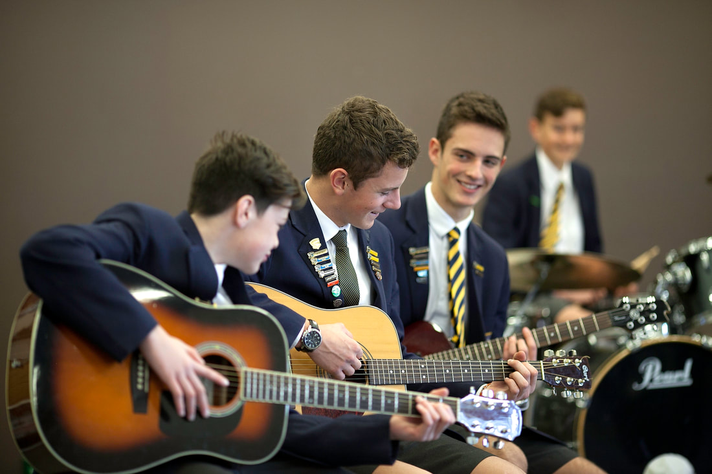
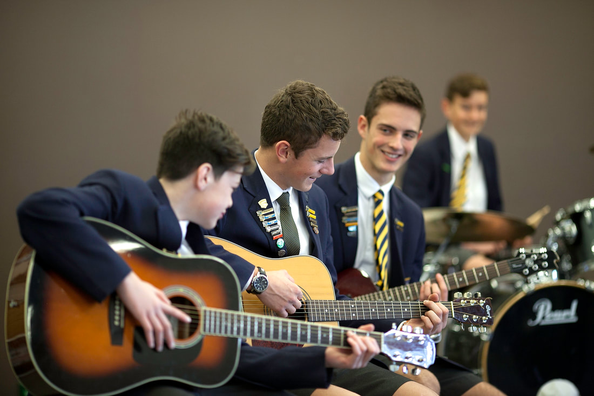
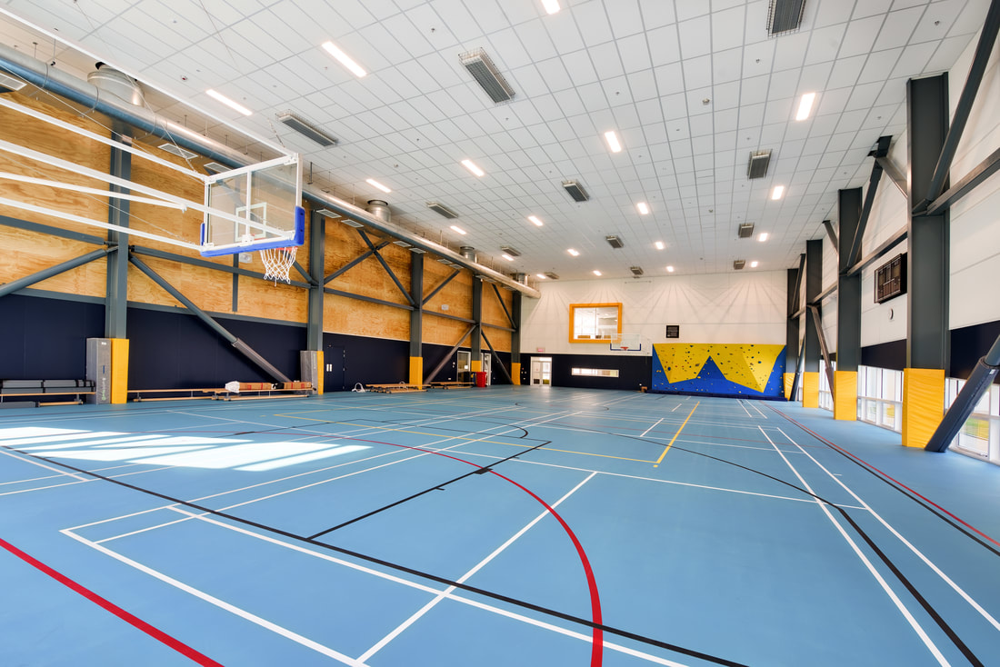
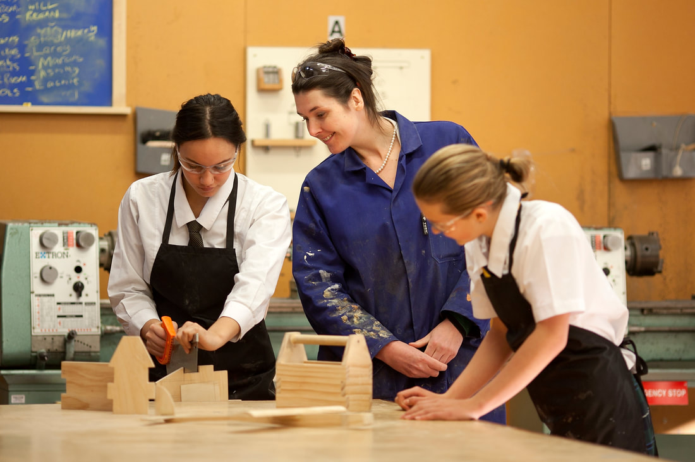
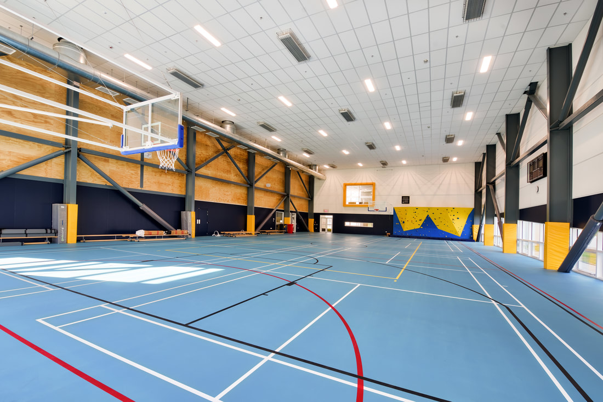
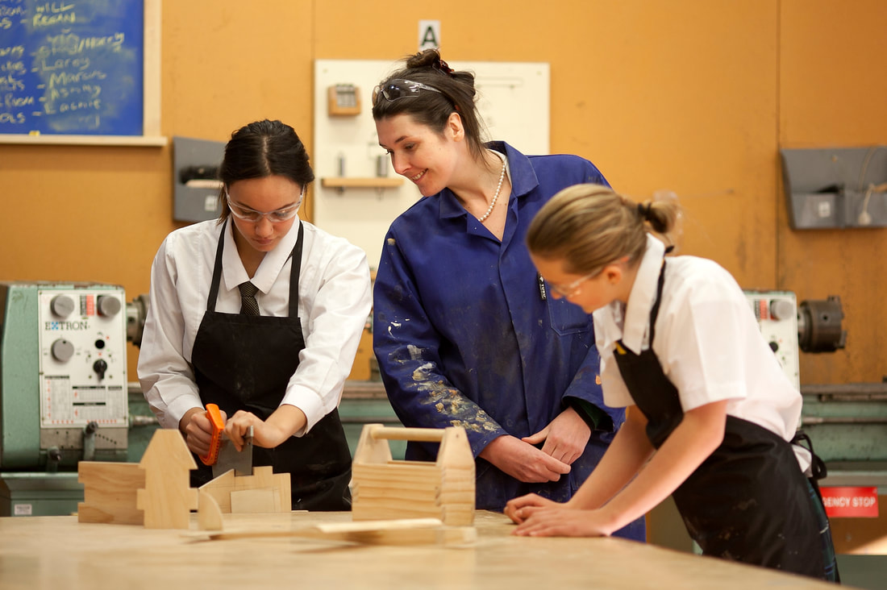

 



In our mission to deliver Aotearoa New Zealand’s best all-round education, our Ākonga Profile describes our aspirations for each and every student. With values at the core, the Ākonga Profile outlines the areas in which we want students to learn and develop. Students in Year 9 and 10 experience the eight learning areas of the New Zealand Curriculum and choose subjects which allow them to explore their interests while building the foundation for a future-focused qualification and ensuring they meet the thresholds required for academic success in the senior school.
As students move to the senior school, they become more specialised in their chosen subjects and pathway; with our broad range of subject choice for both seniors and juniors designed to meet students’ various passions.
We also provide literacy and numeracy support, ESOL classes for second language learners, Talent Development programmes, separate Scholarship support, extension and accelerated learning opportunities across the learning areas. Students learn and develop through our school-wide curriculum too.
An extensive array of extra and co-curricular opportunities, including outdoor education experiences and our vibrant house competition, are all integrated into school life. We actively encourage students to be involved to support their holistic development and wellbeing. Teaching and learning is also supported by Kaiārahi (‘learning advisors’) at WHS. Kaiārahi connect with students and their families from the day they enter the WHS community, and meet with students throughout the week - supporting them to set aspirational goals, and tracking, monitoring and mentoring their achievement.
Our timetable is founded on our belief that student choice is key to engagement - which supports learning, progress and achievement. Students in Years 9 and 10 select twelve courses per year - with six courses running in semester one (Terms 1 & 2) and six in semester two (Terms 3 & 4). Senior students select up to six courses per year - with each course running the whole year. Time for each class totals seven and a half hours over a 10-day timetable cycle (three 60 minute periods and three 90 minute periods).
The structure of the school day is shown below. L-codes and colours in each period indicate different lines in the timetable. View our school timetable.

{kind=link}